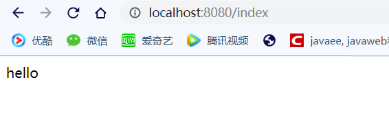
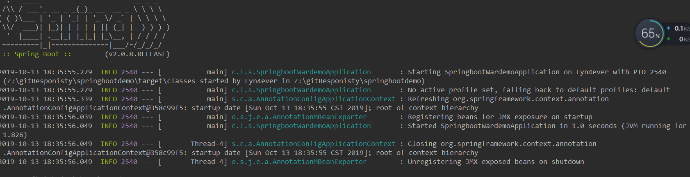
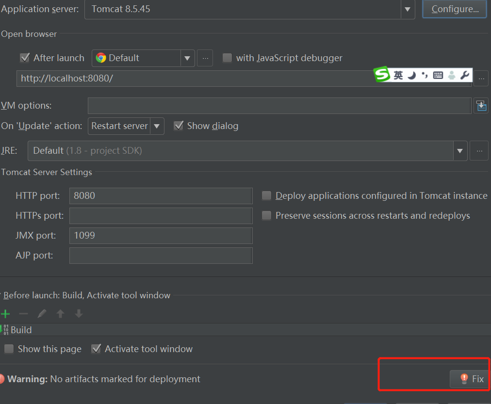

@RestController
public class TestController {
@RequestMapping("index")
public String index() {
return "hello";
}
}我这里的版本是8.5.37,这个是由你选用的springboot的版本定的，我选用的springboot是2.0.8版本的。好了，我们就直接访问项目了，访问成功

好了，我们刚才是直接在idea中启动了这个类，当然就可以打包成jar包启动了，就不演示了，直接开始打包为war包
<!-- 将打包方式改为war包-->
<packaging>war</packaging>
<!--排除骨嵌式tomcat，修改第一个依赖-->
<dependency>
<groupId>org.springframework.boot</groupId>
<artifactId>spring-boot-starter-web</artifactId>
<!-- 移除嵌入式tomcat插件 -->
<exclusions>
<exclusion>
<groupId>org.springframework.boot</groupId>
<artifactId>spring-boot-starter-tomcat</artifactId>
</exclusion>
</exclusions>
</dependency>
<!-- 我们移除了嵌入式的tomcat，就要添加对应的tomcat依赖包 -->
<dependency>
<groupId>javax.servlet</groupId>
<artifactId>javax.servlet-api</artifactId>
<version>3.1.0</version>
<scope>provided</scope>
</dependency>
<dependency>
<groupId>org.springframework.boot</groupId>
<artifactId>spring-boot-starter-tomcat</artifactId>
<scope>provided</scope>
</dependency>
好了，pom.xml算是改完了，这时候，我们在idea中直接启动SpringBootApplication.java时会报以下错误

在我们springboot启动类的同一个下创建一个类
/**
* 修改启动类，继承 SpringBootServletInitializer 并重写 configure 方法
*/
public class SpringBootStartApplication extends SpringBootServletInitializer {
@Override
protected SpringApplicationBuilder configure(SpringApplicationBuilder builder) {
// 注意这里要指向原先用main方法执行的Application启动类
return builder.sources(SpringbootWardemoApplication.class);
}
}因为打包方式为war包，所有启动这个类也就报错了，同样，也不能打包为jar包了。那么我们就在idea中配置tomcat启动方式，tomcat的版本要和之前这个嵌入式的一样（理论上只要大版本上相同就好了，同为tomcat8.5）。更多的tomcat版本下载，见tomcat各个版本下载
在idea配置tomcat启动时可能有个小插曲，就是找不到对应的war包，你可以先使用maven打包一次，或者点击下这里

我们在idea中用tomcat方式启动后，没有问题了。
### 最后，我们用maven打包，然后放在我们的tomcat中启动就可以了
注意以下几点 ：
1.之前在springboot中一些配置不生效，最明显的就是对端口的配置
2.如何修改之前的springboot项目的版本，只要在pom.xml中最开始的地方修改就可以了
<parent>
<groupId>org.springframework.boot</groupId>
<artifactId>spring-boot-starter-parent</artifactId>
<version>2.0.8.RELEASE</version>
<relativePath/>
</parent>